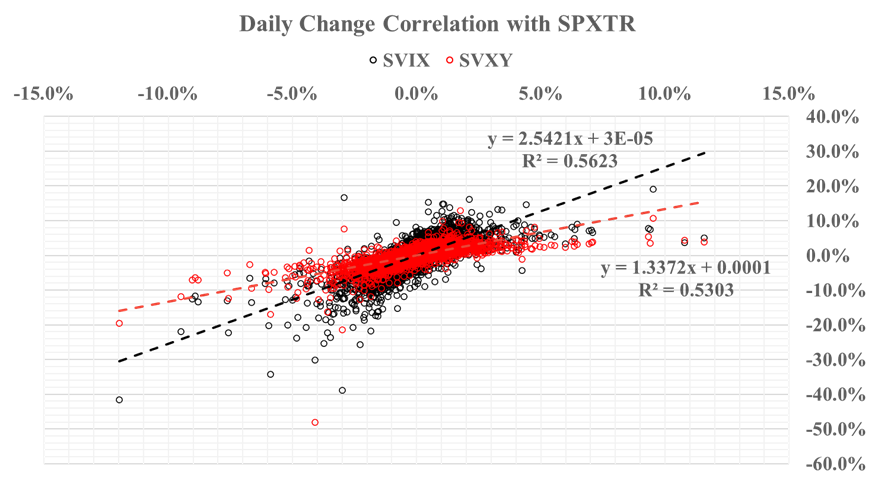
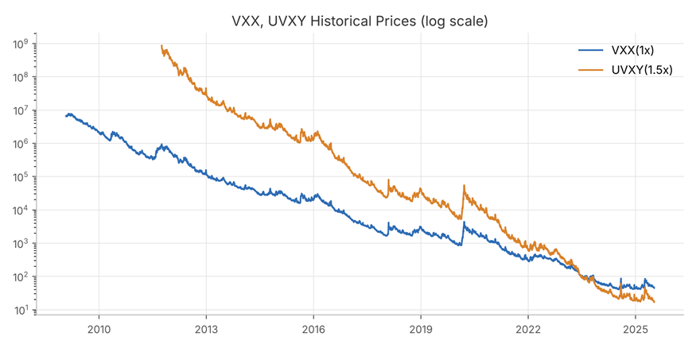
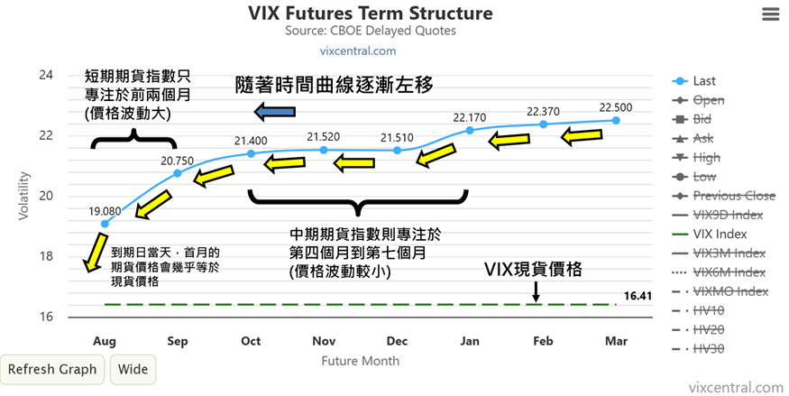
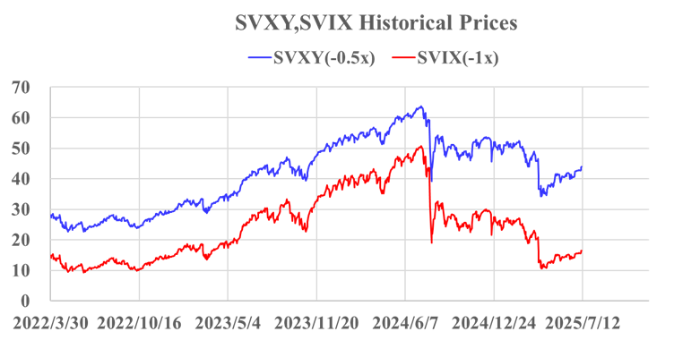
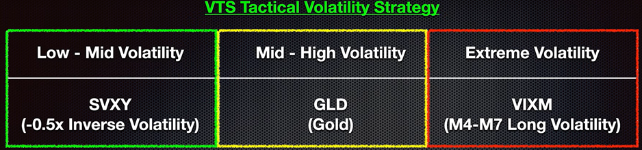

前兩章我們認識了 VIX 指數、VIX 期貨，以及各式各樣的 VIX 相關 ETP。這一章要回答的是更實際的問題：這個和一般股市迥異的交易生態，究竟藏著什麼機會，又埋著什麼陷阱？ 本章依序會談到：VIX 相關 ETP 與大盤的相關性和 Beta、長期做多 VIX 為什麼是「傾家盪產」、做空 VIX 的優勢來自哪裡、做空 VIX 最大的夢魘「波動率末日」，以及最後的解決方向：輪換策略。
一、相關性與 Beta：你看到的槓桿，不是你以為的槓桿
要比較不同
ETP 與大盤的關係，需要兩個工具：
•
相關性（Correlation）：衡量兩個資產報酬率的變動方向是否一致。它告訴我們某個金融商品跟大盤走勢是否同步（看正負），以及同步程度高不高（看絕對值）。最直接的方法，是把資產報酬率之間做線性回歸，得到「R 值」。
•
Beta 值：衡量某資產報酬相對於市場指數報酬的「變動幅度」，也就是相較於大盤，這個資產的波動大小與方向。最直接的方法，同樣是把資產報酬率之間做線性回歸，得到「斜率」。
下表是 VIX 指數與幾檔
ETP，和大盤（SPXTR）每日報酬的相關性與 Beta 值，並以標普
500 正二 ETF（SSO）作為對照：
|
|
VIX vs. SPXTR |
SVIX vs. SPXTR |
SVXY vs. SPXTR |
VXX vs. SPXTR |
UVXY vs. SPXTR |
SSO vs. SPXTR |
|
相關性 |
-0.72 |
0.75 |
0.73 |
-0.72 |
-0.73 |
0.99 |
|
Beta |
-4.75 |
2.54 |
1.34 |
-2.61 |
-3.97 |
1.94 |

從這裡可以看出，SVXY
雖然名為 0.5 倍槓桿，Beta 值卻高達 1.3 倍；SVIX 雖然名為 1 倍槓桿，Beta
值更高達 2.5 倍，比 SSO（標普 500 正二）還要高。這也點出 SVIX「真正的」高槓桿特性：多頭時的複利偏移非常顯著，但單純買入並持有（buy & hold），也要承擔極大的波動耗損，以及空頭時更大的跌幅。因此，較「保守」的 VIX 做空交易者，更傾向於使用 SVXY。
這個落差並不神秘：VXX（做多 1 倍 VIX 短期期貨）的 Beta 約為 -2.61，反向 0.5 倍的 SVXY 自然落在約 1.3，反向 1 倍的 SVIX 則落在約 2.5。換句話說，VIX 期貨本身對大盤的敏感度就遠高於 1，ETP 名稱上的倍數，是相對於 VIX 期貨指數而言，不是相對於大盤。
註：起初 SVXY 也是 1 倍做空 VIX 短期期貨，但在經歷 2018 年「波動率末日」後，才被降槓至 0.5 倍。
ETP 名稱上的槓桿倍數，是相對於 VIX 期貨指數，不是相對於大盤。
二、長期做多 VIX：傾家盪產
把 VXX、UVXY 的歷史價格畫出來，會看到一條幾乎一路向下的曲線。要特別注意，下圖是對數座標，這代表每一格都是十倍的差距

圖 2 VXX、UVXY 歷史價格（對數座標）正向 ETP 長期下跌，但短期有機會暴漲；反向 ETP 則相反，長期上漲，但短期有機會暴跌。VXX、UVXY、UVIX 等一眾做多
VIX 的 ETP，不過短短數年的成立時間，淨值就已經下跌超過 99%，每隔幾年就要經歷併股。
長期做多 VIX
的下場，就是這樣：它或許能在恐慌的當下帶來漂亮的短線報酬，但時間站在對面。
三、做空 VIX 的優勢：VIX 期貨長期正價差
為什麼做多
VIX 的 ETP 會長期下跌？答案藏在期限結構裡。在穩定的市場中，VIX 期貨期限結構長期處於正價差（Contango）：期貨價格大於現貨價格，而且遠月期貨價格大於近月價格。隨著時間向前推進、接近到期日，這些期貨都會向現貨價格收斂，遠月期貨也會向近月期貨的價格靠攏。這正是 VIX 期貨指數在長期通常呈現下跌趨勢的原因。在逆價差（Backwardation）結構下，情形則恰好相反。

圖 3 VIX 期貨期限結構：曲線隨時間逐漸左移（資料來源：vixcentral.com）
圖中也標示出兩種指數的差異：短期期貨指數只專注於前兩個月（價格波動大），中期期貨指數則專注於第四個月到第七個月（價格波動較小）。到期日當天，首月的期貨價格會幾乎等於現貨價格。
註：坊間有種說法流傳，VIX 期貨指數長期下跌，是因為每日再平衡機制「賣出價格較低的近月期貨，買入價格較高的遠月期貨」。這其實是一種迷思。實際上，再平衡機制只是進行資產的等值交換，和期貨價格無關，總體資產價值也維持不變。
正價差的趨勢，反而形成了 VIX 反向型 ETP 無形中向上攀升的助力。正是這樣的助力，讓 SVXY 和 SVIX 在 2023 年的多頭行情中，分別上漲了 76.2% 和 157%。

圖 4 SVXY、SVIX 歷史價格（2022/3/30～2025/7/12）
既然如此，什麼才是造成反向型 ETP 暴跌風險的原因呢？
四、做空 VIX 最大的夢魘：波動率末日
「波動率末日」（Volmageddon）是市場俗稱，特別指
2018 年 2 月 5 日發生的事件。這個詞由 Volatility（波動率）和 Armageddon（《新約聖經·啟示錄》所預言的末世善惡對決的最終戰場）兩個詞組成。當天 VIX 指數在短短一個交易日內暴漲超過 100%，導致一連串做空 VIX 或追蹤其反向表現的金融商品瞬間崩盤。
最具代表性的是
XIV（反向 1 倍槓桿，算是 SVIX 的前身）。XIV
當日暴跌超過 90%，隔天宣告清算。不過，XIV 的下市並不能全然歸咎於 VIX 指數的單日巨幅飆升。當時大量做空 VIX 的部位同時爆倉（包括槓桿 ETP 與機構投資人，反向曝險需緊急買回期貨合約對沖），進而繼續推升 VIX，這樣的連鎖反應放大了衝擊，最終引發如同核爆夷平一切的末日。
SVXY（當時為反向 1
倍槓桿）當日也下跌超過 90%，淨值幾乎歸零，但並未清算下市。事件之後，ProShares 將 SVXY 的反向曝險由 -1x
調降為 -0.5x。
後續推出的
SVIX，則針對這種極端情境，提出相對於 XIV 的關鍵調整與風控機制：
•
每日再平衡不超過 VIX 期貨總量的
10%，以降低流動性風險與價格衝擊。
•
在市場極端波動下，可啟動「延長再平衡期」，並通報交易所與 SEC。
•
明確保留美債、貨幣市場工具，作為保證金與資產緩衝。
•
允許使用選擇權、SWAP 等其他衍生工具替代期貨。
•
架構為 ETF，有資產保障與每日揭露的透明度。
•
多處揭露與教育文件強調：不可長期持有，需每日監控。
五、解決方法：輪換策略
單純長期持有
VIX 反向型 ETP，有很高的機率遭遇波動率末日。要解決這個問題，就必須有適當的進出場策略。如此一來，做空 VIX 就變成一種講究「擇時」的主動投資方法。
這類策略主要考量市場當下的波動程度（樂觀或恐慌的程度），將資金配置於表現最佳的資產上，例如：
•
低波動率時期：配置 VIX 反向型 ETP。
•
波動率上升期：配置與大盤相關性極低的黃金。
•
波動率爆表時：配置 VIX 正向型 ETP（通常採用價格波動較小的中期期貨 ETP）。

圖 5 VTS
Tactical Volatility Strategy 示意（參考來源：volatilitytradingstrategies.com）